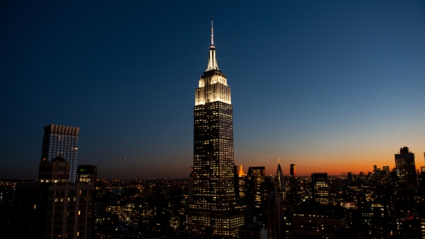
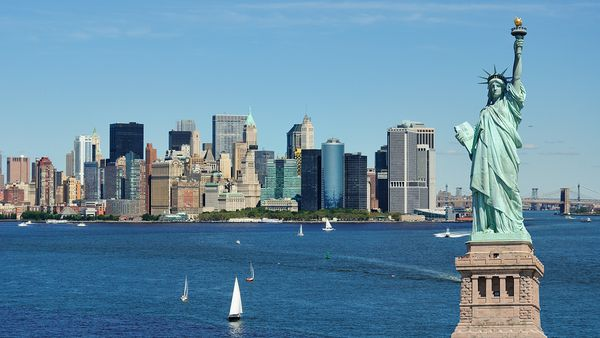
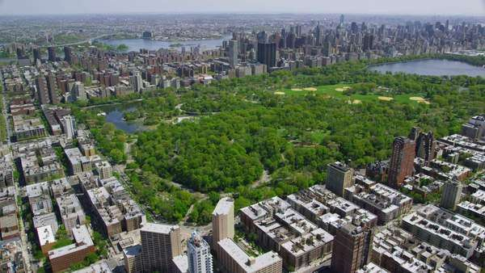

The Empire State Building is a 102-story skyscraper located on Fifth Avenue between West 33rd and 34th Streets in Midtown, Manhattan, New York City. It has a roof height of 1,250 feet (381 m), and with its antenna included, it stands a total of 1,454 feet (443.2 m) tall.

The Statue of Liberty is a colossal neoclassical sculpture on Liberty Island in New York Harbor. The copper statue, a gift from the people of France to the people of the United States, was designed by French sculptor Frédéric Auguste Bartholdi and built by Gustave Eiffel. The statue was dedicated on October 28, 1886.

Central Park is an urban park in Manhattan. It is the most visited urban park in the United States, with 40 million visitors in 2013, and one of the most filmed locations in the world. It covers an amazing area of 843 acres!